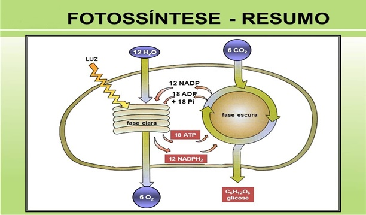
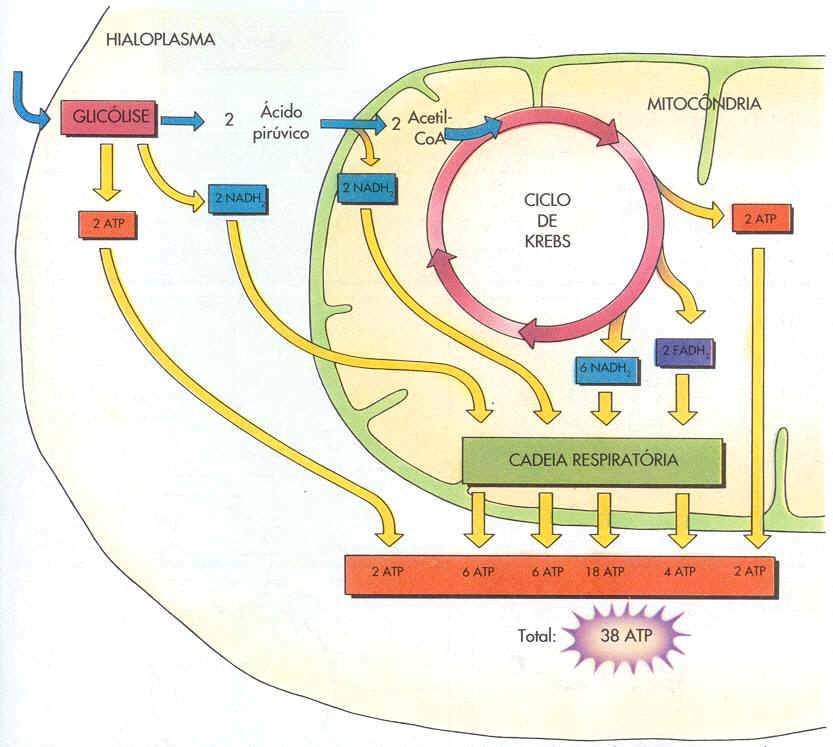

Biologia
A biologia é o estudo da vida. Sendo mais especifico, entender e conhecer a biologia é entender como todos os seres vivem e se comportam em estado de natureza. Dentro dessa materia estudamos desde o mundo microscópico, com as células, até o mundo macroscopico, com os seres e o
Citologia
Citologia é o assunto da Biologia onde estudamos a fundo o mundo microscópico, encontrando os conceitos e funções específicos das celulas e de suas diversas organelas.
Celula
É a unidade estrutural e funcional dos seres vivos, formada por material genético, citoplasma, membrana plasmética e organelas. Porem existem diversos tipos de celulas no mundo, dentre algumas das diversas clasificações podemos destacar duas:
Célula Procarionte:
É um tipo de célula que não possuiu envoltorio nuclear(carioteca) entre seu citoplasma e seu material genetico(DNA).
Célula Eucarionte:
É um tipo de célula que possuiu envoltorio nuclear(carioteca) entre seu citoplasma e seu material genetico(DNA), em teoria o contrario da célula procarionte.
Organelas
São estruturas que auxiliam a célula na execução de processos fundamentais para seu bem estar. As organelas se encontram mergulhadas em um fluido no interior das células chamado de citoplasma. Agora vamos ver oque cada uma faz:
Retículo Endoplasmático Liso:
É um conjunto de canais formados por uma membrana composta por uma bicamada fosfolipídica, o reticulo endoplasmático liso é responsavel pela síntese e transporte de lipídios, dentre um dos fatos que auxiliam nisso é a ausência de ribossomos em sua superfície.
Retículo Endoplasmático Granuloso:
É um conjunto de canais formados por uma membrana composta por uma bicamada fosfolipídica, o reticulo endoplasmático liso é responsavel pela síntese e transporte de proteinas, isso ocorre pella presença de ribossomos em sua superfícies.
Ribossomo:
É uma estrutura composta por duas partes arredondadas, que são formadas por proteinas e uma tipo de ácido ribonucleico. Como ja deve ter desconfiado o ribossomo é responsavel pela síntese de proteinas e como ja dito, se entra-se no reticulo endoplasmático granuloso.
Complexo de Golgi:
É um conjunto de sacuolos, revestidos por uma membrana composta por uma bicamada fosfolipídica. O complexo de golgi é a organela responsavel pelo armazenamento, secreção e produção de substâncias.
Lisossomos:
É uma estrutura arredondada composta por uma bicamada lipoproteica e possui uma quantidade elevada de enzimas digestivas. É responsavel pela diretamente pela digestão celular.
Perroxissomos:
É uma organela membranosa de contorno arredondado. Essa organela é responsavel pelo processo de oxidação de substâncias organias presentes na célula. Porem tambem é responsavel pela desintoxicação da celula.
Mitocôndrias:
São organela responsaveis pelo processo que conhecemos como respiração celular aeróbica. Elas possuem um formato que se assemelha a um bastonete, alem disso é revestida pos duas membranas lipoproteicas, uma externa e uma interna que forma os Cristais Mitocondriais, posuindo em seu interrior oque chamamos de Matriz Mitocondrial.
Cloroplasto:
É uma organela exclusiva de seres fotosintetisantes (seres que realizam fotosíntese). O cloroplasto possui em seu interior pigmentos de crolofila e carotenoisdes isso le permite uma capacidate fundamental para seres como plantas, realizar a fotosíntese.
Fotosíntese
A fotosítese é um processo estremamente importante para a vida, afinal ela simplesmente cria a molecula energética mais importante para o nosso corpo, a glicose alem de criar um dos gases fundamentais para a vida, o gás oxigênio. Esse processo ocorre em uma organela chamada cloroplasto e pode ser dividido em duas partes:
Fase Clara:
Éssa fase se baseia na quebra da molécula de água obtida pela planta por meio de um processo que é chamado de fotólise, alem disso nesse processo ocorre a liberação de oxigênio.
Fase Escura:
Durante essa fase ocorre a produção da molecula de glicose. Essa molécula é produzida por meio dos hidrogénios obtidos pela fotolise e do gás carbono obtido do ár.

Respiração Celular
A respiração celular é o processo responsavel pela quebra da glicose para obtenção de energia. Em meio aos diversos processos que ocorerem durante a respiração podemos destacar três que possuem grande importância:
Glicolise:
Durante essa fase ocorre a quebra das moléculas de glicose por meio do processo de glicolise. O produto dessa quebra é a liberação de uma substância chamada ÁCIDO PIRÚVICO. É importante resaltar que essa fase ocorre fora das mitocóndrias, mais especificamente no hialoplasma.
Ciclo de Krebs:
Em meio a esse processo o ácido pirúvico passa por um processo de perda de seus carbonos (C) para captão de seus hidrogénios que seram futuramente usados durante a cadeia respiratoria
Cadeia Respiratoria:
Nesse momento a celula ja possui uma quantidade suficiente de hidrogenios captados pelas moleculas aceptoras de hidrogénio (NAD e FAD), apartir de agora a célula passa a utilizalos para a obtenção de energia que sera usada para manter os diversos processos feitos pela célula.
